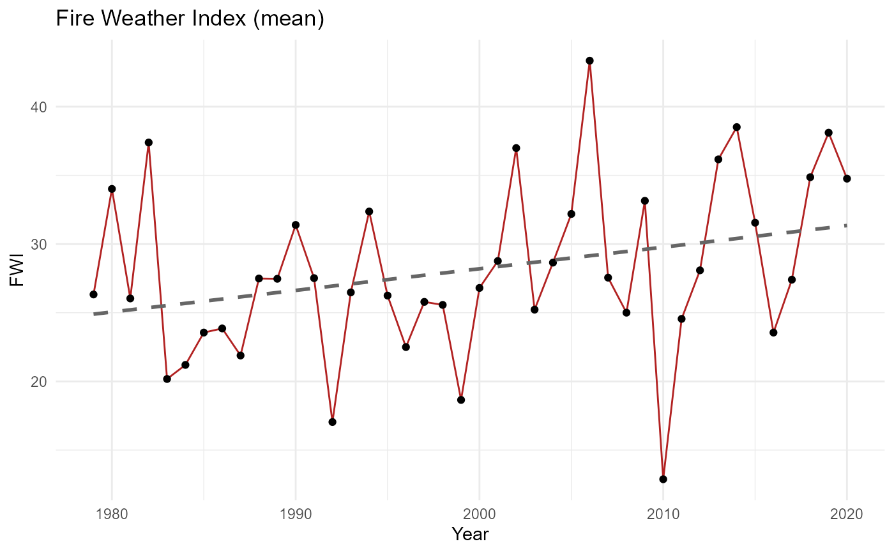
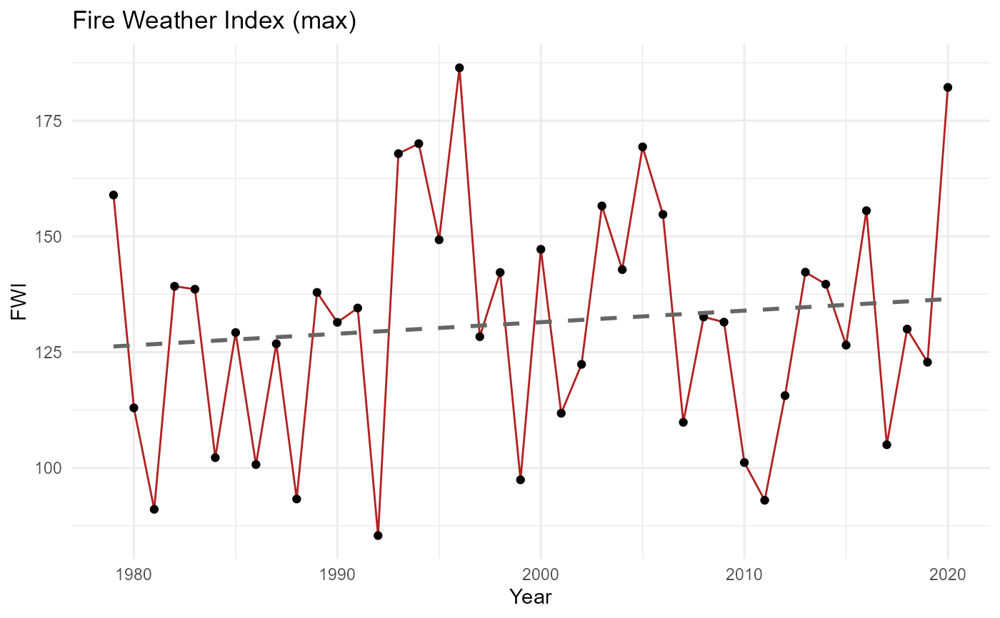

Plot Fire Weather Index trends
plot_fwi_trend.RdCreates a time series plot of yearly Fire Weather Index values for
southeastern Australia, based on the bushfire dataset.
Examples
data(bushfire)
plot_fwi_trend(bushfire, metric = "mean")
#> `geom_smooth()` using formula = 'y ~ x'

plot_fwi_trend(bushfire, metric = "max")
#> `geom_smooth()` using formula = 'y ~ x'
